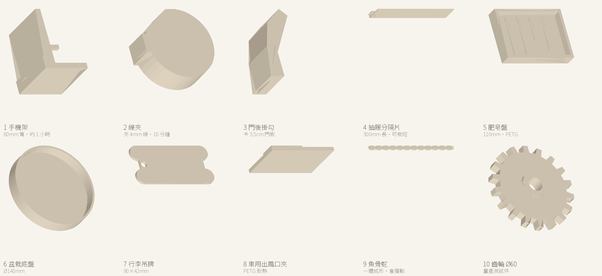
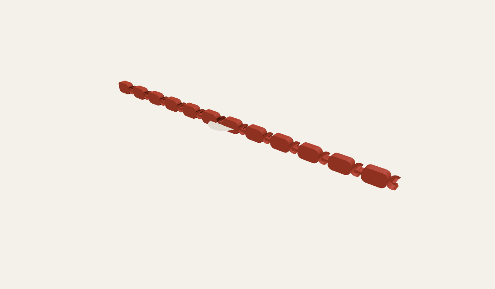

← 3D 模型瀏覽器
可以直接列印的 3D 模型
六個模型 + 八個實用件，單位都是 mm、全部都通過「每條邊剛好被 2 個三角形使用」的水密檢查，丟進切片軟體就能印。

買了新機先印這十件：前八件是解決生活問題的實用件，後兩件是「只有 3D 列印才做得出來」的展示件。
實用件（Bambu A1 直接印，不用先校準）
手機架（80 mm 寬）
70 × 95 × 80 mm｜112 cm³（約 139 g）
背板 95 mm、前緣擋牆 20 mm
建議 12% 填充、免支撐
線夾（夾 4 mm 線）
23 × 22 × 8 mm｜1.84 cm³（約 2.3 g）
C 形開口 3.2 mm，可夾充電線、網路線
一次印一整排最划算
門後掛勾
30 × 58 × 30 mm｜16.3 cm³（約 20 g）
卡 3.5 cm 門板、免鑽孔
PLA 即可，別掛太重
抽屜分隔片（300 mm）
300 × 14 × 60 mm｜47.1 cm³（約 58 g）
兩端 U 型夾，夾 4 mm 抽屜側板
太長可自行裁短或用拼接
肥皂盤（110 mm）
110 × 78 × 18 mm｜57.0 cm³（約 71 g）
底部四條肋＋排水間隙
建議 PETG，浴室不發霉
盆栽底盤 Ø140
Ø140 × 22 mm｜70.7 cm³（約 88 g）
壁厚 3 mm、內徑 134 mm
尺寸不合可用切片軟體等比縮放
行李吊牌
90 × 42 × 3 mm｜10.4 cm³（約 13 g）
掛孔 Ø6.4，四角 R8 圓角
可印兩色：底殼＋文字片
車用出風口夾
60 × 15.5 × 40 mm｜9.9 cm³（約 12 g）
夾片 3 mm、背板 40 mm
務必用 PETG 或 ASA，PLA 夏天會軟
A1 不用先做溫度塔。Bambu A1 出廠已自動床平、Studio 內建材料參數，傳統的溫度塔／流量方塊是多餘的。真的要驗，只印兩個：
20 mm 方塊（量尺寸，5 分鐘）與
橋接測試片（只有要印架空結構才需要）。
一體成形的魚骨蛇
魚骨蛇（卡扣式）
190.8 × 8 × 4 mm｜12 節
8,036 三角面｜11.84 cm³（PLA 約 14.7 g）
每節＝平板＋C 形扣環＋柱銷，間隙 0.25 mm
撓性蛇（珠子＋細頸）
164 × 6.5 × 6 mm｜活鉸結構
22,968 三角面｜2.98 cm³（約 3.7 g）
最軟、最不容易印失敗
撓性蛇（16 節寬鬆版）
184 × 5.5 × 5 mm｜16 節
2.43 cm³（約 3.0 g）
節數多、擺動更滑順

近看接頭：板身右端是 C 形扣環，左端柱銷穿進前一節的環裡。中間那個「看起來斷掉」的缺口是刻意留的開口，不是破面。
齒輪・花瓶・杯墊
齒輪 Ø60
60 × 60 × 9 mm
14.14 cm³（約 17.5 g）
16 齒、中心孔 Ø8，可當減速齒輪組
花瓶 110 mm
75.5 × 75.5 × 110 mm
25.08 cm³（約 31 g）
單層牆可印成透光薄殼，建議花瓶模式
杯墊 Ø90
90 × 90 × 4 mm
23.55 cm³（約 29 g）
邊緣倒角，吸水層可墊軟木
STEP（CAD 原檔）
這四個是用 OpenCascade 產生的B-rep 實體（不是三角網格），可以直接拖進 CAD 軟體修改，也能拖進上面的瀏覽器看。
杯墊 Ø90（STEP）
Ø90 × 4 mm
實體圓柱，邊緣可自行加圓角
魚骨蛇單節（STEP）
11 × 8 × 4 mm
圓角平板＋Ø2.5 扣環孔，可自行複製排列
花瓶 110 mm（STEP）
75.5 × 75.5 × 110 mm
旋轉體，壁厚 2 mm
齒輪 Ø60（STEP）
60 × 60 × 9 mm
16 齒、中心孔 Ø8
建議列印參數
| 項目 | 魚骨蛇 | 撓性蛇 | 齒輪／杯墊 | 花瓶 |
|---|
| 層高 | 0.2 mm | 0.2 mm | 0.2 mm | 0.24 mm |
| 外牆 | 3 圈 | 2 圈 | 4 圈 | 1 圈（花瓶模式） |
| 填充 | 20% | 15% | 40% | 0% |
| 支撐 | 不要開 | 不要開 | 不要開 | 不要開 |
| 首層高度 | 0.24–0.28 mm | 0.2 mm | 0.2 mm | 0.2 mm |
魚骨蛇最容易失敗的地方：首層壓太扁（被平台壓到 0.15 mm 以下）會讓扣環跟柱銷黏死。
首層拉到 0.24–0.28 mm，或在切片軟體把「水平擴張」設 −0.05 mm。
印完先用手輕輕左右擺每一節，能動再整條拉直，硬拉會斷銷。
自己檢查一個 STL 能不能印
- 水密：每條邊剛好被 2 個三角形使用（不是 1 也不是 3）。用 Python 的
Counter 統計排序後的邊索引就能驗。
- 平底：最小 z 必須是 0，否則一定要支撐。
- 單位：STL 沒有單位欄位，慣例是 mm。檔案匯出時就要用 mm 建模，不要事後縮放。
- 體積為正：繞向（winding）一致，切片軟體才不會把裡面當外面。
手上有 STEP／STP 的 CAD 檔也可以直接拖進 3D 模型瀏覽器：瀏覽器內用 OpenCascade 三角化後顯示，檔案不會上傳（第一次載入引擎約 5～10 秒）。
想自己比對兩個版本差多少？用 3D 模型比對：丟兩個檔進去，算出平均偏差與紅色熱點。